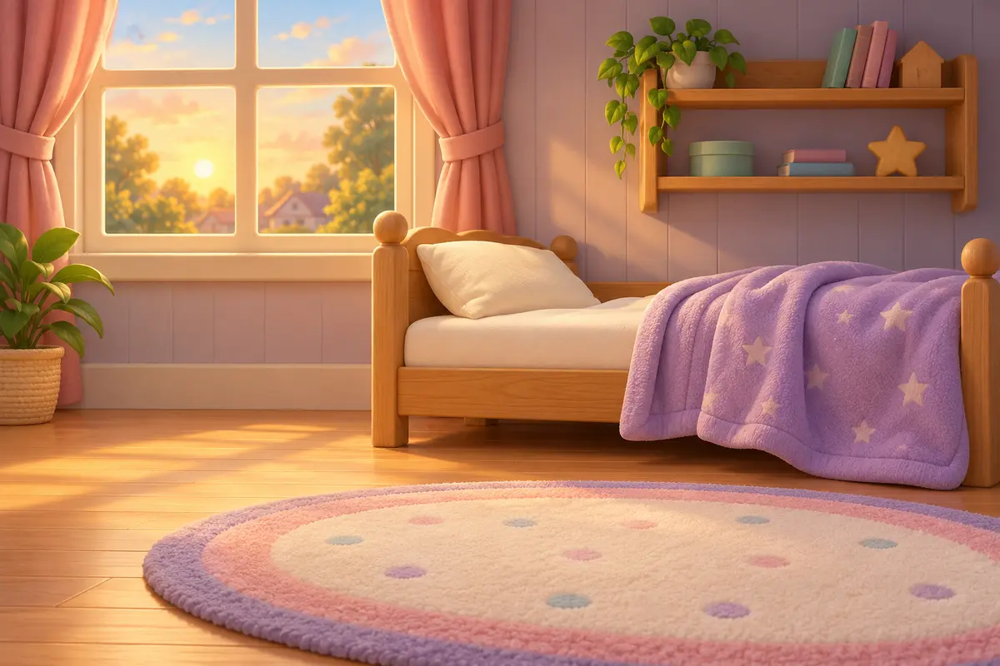
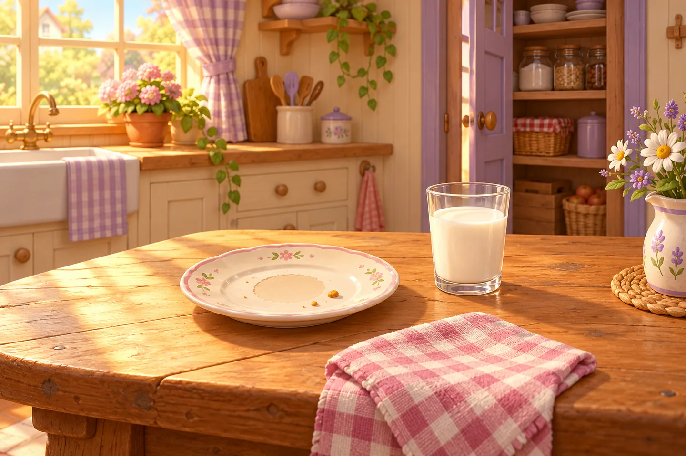
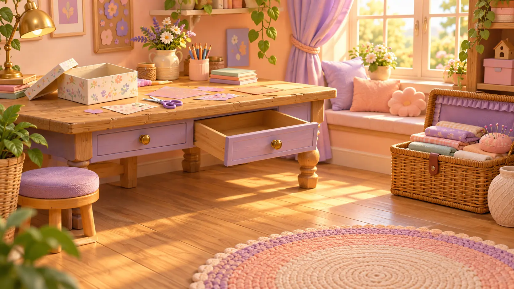
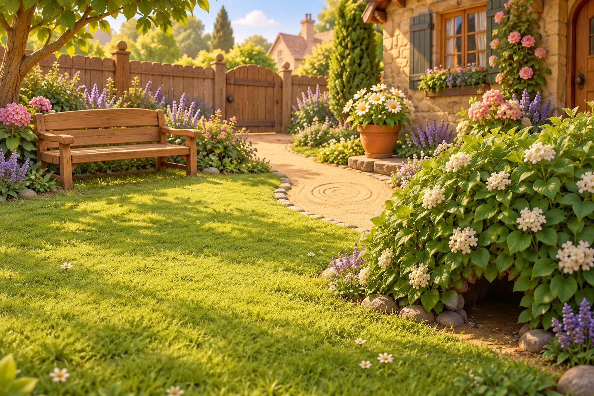
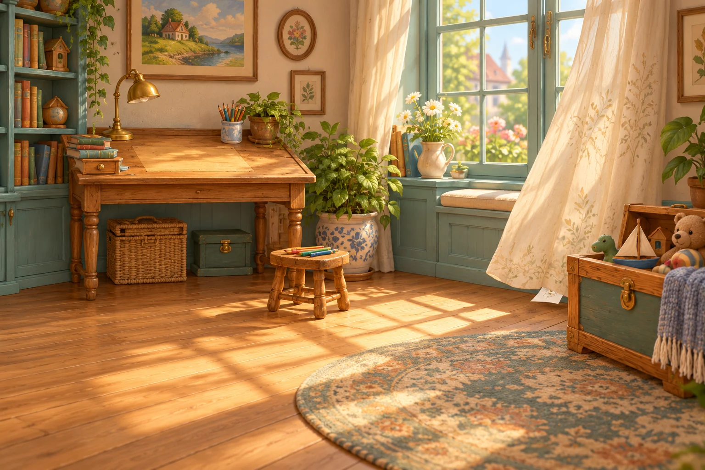

Мімі та загадкові зникнення
← ПригодиГоловний детектив — ти, а Мімі — твій помічник. Обирай справу, шукай підказки й знаходь пояснення!

СПРАВА №1
Зниклий ведмедик
Куди подівся улюблений друг?
СПРАВА №2
Таємниця печива
На тарілці залишилися лише крихти…
СПРАВА №3
Загублена стрічка
Знайди коралову стрічку для подарунка.
СПРАВА №4
Захований м’ячик
Куди веде круглий слід на стежці?
СПРАВА №5